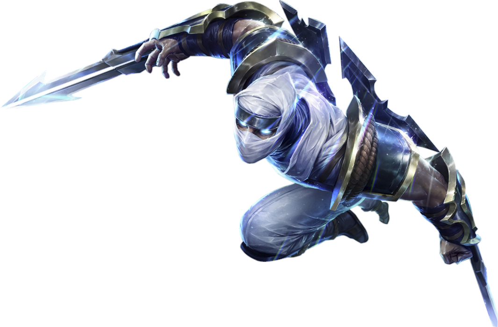

LEAGUE OF LEGENDS NEDİR ? LEAGUE OF LEGENDS NEDİR ?
LEAGUE OF LEGENDS NEDİR ? LEAGUE OF LEGENDS NEDİR ?
Son derece gaddar ve acımasız biri olan Zed, Ionia'nın büyü ve dövüş sanatı adetlerini bir silah haline getirerek Noxus'lu işgalcileri topraklarından atmak için kurduğu Gölge Tarikatı'nın lideri. Savaş sırasındaki çaresizliği, onu gölge biçimi olarak bilinen ve güçlü olduğu kadar tehlikeli ve yozlaştırıcı, kötü bir ruh büyüsünü serbest bırakmaya itti. Zed, ülkesi veya yeni örgütü için tehdit olarak gördüğü her şeyi ortadan kaldırabilmek için bu yasak tekniklerin bir ustası haline geldi.
Büyük azme sahip bir Ionia'lı olan Yasuo, havanın gücünü düşmanlarına karşı kullanan çevik bir savaşçı. Gençliğinin mağrur günlerinde haksız yere ustasını katletmekle suçlanmış ve masumiyetini kanıtlayamayınca kendisini korumak için ağabeyini öldürmek zorunda kalmıştı. Ustasının gerçek katili gün yüzüne çıksa da Yasuo yaptıkları için kendini affedemedi ve şimdilerde sadece kılıcına rehberlik eden rüzgârın peşinde vatanının topraklarını arşınlıyor.
Karanlık büyülerin hevesli efendisi Veigar, çok az faninin yaklaşmaya cüret edeceği güçlere kucak açmış biri. Bandle Şehri'nin özgürlüğüne düşkün bir sakini olarak uzun yıllar boyunca yordle büyülerinin sınırlamalarını aşmak istemiş ve binlerce yıl boyunca saklı kalmış kadim elyazmalarına yönelmişti. Artık evrenin sırlarına karşı sonsuz merak duyan inatçı bir yaratık haline gelen Veigar, sık sık başkaları tarafından küçümseniyor. Ancak kendisinin gerçekten kötü biri olduğunu düşünmesine rağmen yine de içinde bazı ahlâk kuralları olması kimilerinin onun gerçek amaçlarını sorgulamasına neden oluyor.
Kinkou Tarikatı'nı ve Gölgenin Yumruğu unvanını terk eden Akali artık halkının ihtiyaç duyduğu ölümcül silah olmaya hazır. Saldırılarını tek başına yapıyor. Ustası Shen'den öğrendiklerine sıkı sıkı sarılmış olsa da Ionia'yı düşmanlarının canlarını teker teker alarak korumaya ant içmiş. Akali sessizce saldırıyor ama vermek istediği mesaj açıkça duyuluyor: Efendisiz suikastçıdan korkacaksın.
Hükmü kesin, saldırısı ölümcül Katarina, üst düzey bir Noxus suikastçısı. Efsanevi General Du Couteau'nun en büyük kızı olarak hiçbir şeyden haberi olmayan hasımlarını bir solukta katletmesi sayesinde yeteneklerini duymayan kalmamış. Doymak bilmez hırsı nedeniyle (bazen kendi müttefiklerini tehlikeye atmak pahasına) çok sıkı korunan hedeflerin peşine düşmekten çekinmiyor ve niteliği ne olursa olsun, Katarina fırtına gibi kullandığı bıçaklarıyla vazifesini yerine getirmekten geri kalmıyor.
LeBlanc, Noxus'un ilk günlerinden beri insanları ve olayları kurnazlıkla parmağında oynatan, soluk tenli kadının sayısız adından sadece biri. Kara Gül birliğinin diğer mensuplarının bile akıl erdiremediği, gücüyle kendini kopyalayan bu büyücü her yerde herkesin karşısına çıkabilir ve hatta aynı anda birden fazla yerde bulunabilir. Her zaman görünmez kuytularda komplo kuran LeBlanc'ın gerçek niyeti ise kimliği kadar anlaşılmazdır.